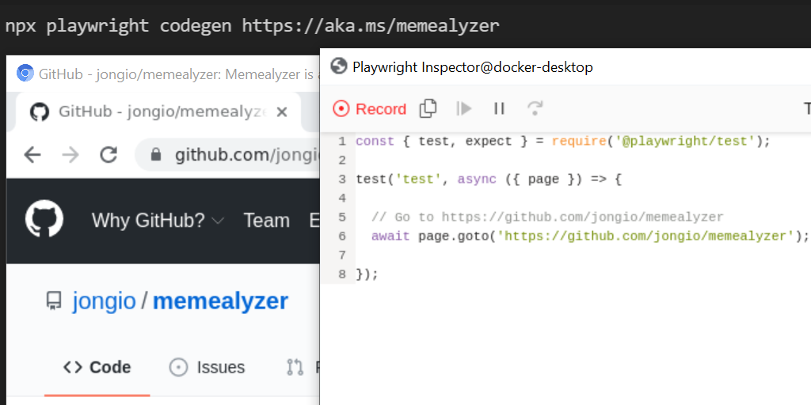
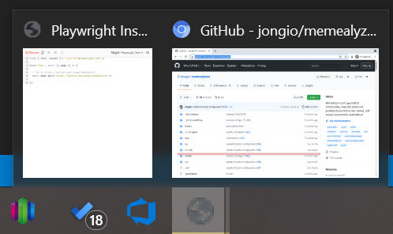

I started playing with Playwright (the browser test automation tool) yesterday and discovered that the codegen feature doesn’t work in a devcontainer out of the box. You’ll get the “Unable to open X display.” error message if you don’t do the steps below.
If you want to go full virtual and stay away from X forwarding, then you can try to get this desktop-lite.sh script working in your container. I personally ran out of time and X forwarding works for me so I didn’t try it.
Here’s how to set it up if you are starting from scratch with a Windows host and X forwarding.
The code below can also be found here: https://github.com/jongio/playwright-codegen-devcontainer
- Install VcXsrc on Windows https://sourceforge.net/projects/vcxsrv/
This forwards UI requests from devcontaier to the Windows host.
Check “Disable access control” when you install it. Leave all other options as default.
- Use the VS Code Remote Containers extension to add the “GitHub Codespaces” devcontainer.
This is a MASSIVE IMAGE that takes a very long time to build. I’m using that here because I know it works. But feel free to choose a smaller image that suits your needs.
- Modify the Dockerfile to include the Playwright bits
Dockerfile
FROM mcr.microsoft.com/vscode/devcontainers/universal:1-focal
USER root
RUN apt-get update && export DEBIAN_FRONTEND=noninteractive \
&& npm i -D @playwright/test
USER codespace
RUN npx -q playwright install \
&& npx playwright install-deps
- Modify the devcontainer.json file to include the X forwarding bits in
runArgs
Required snippet to add to existing devcontainer.json
// For format details, see https://aka.ms/devcontainer.json. For config options, see the README at:
// https://github.com/microsoft/vscode-dev-containers/tree/v0.194.0/containers/codespaces-linux
{
"runArgs": [
"--net", "host",
"-e", "DISPLAY=host.docker.internal:0",
"-v", "/tmp/.X11-unix:/tmp/.X11-unix"
]
}
Entire devcontainer.json
// For format details, see https://aka.ms/devcontainer.json. For config options, see the README at:
// https://github.com/microsoft/vscode-dev-containers/tree/v0.194.0/containers/codespaces-linux
{
"name": "GitHub Codespaces (Default)",
"build": {
"dockerfile": "Dockerfile"
},
"settings": {
"go.toolsManagement.checkForUpdates": "local",
"go.useLanguageServer": true,
"go.gopath": "/go",
"go.goroot": "/usr/local/go",
"python.pythonPath": "/opt/python/latest/bin/python",
"python.linting.enabled": true,
"python.linting.pylintEnabled": true,
"python.formatting.autopep8Path": "/usr/local/py-utils/bin/autopep8",
"python.formatting.blackPath": "/usr/local/py-utils/bin/black",
"python.formatting.yapfPath": "/usr/local/py-utils/bin/yapf",
"python.linting.banditPath": "/usr/local/py-utils/bin/bandit",
"python.linting.flake8Path": "/usr/local/py-utils/bin/flake8",
"python.linting.mypyPath": "/usr/local/py-utils/bin/mypy",
"python.linting.pycodestylePath": "/usr/local/py-utils/bin/pycodestyle",
"python.linting.pydocstylePath": "/usr/local/py-utils/bin/pydocstyle",
"python.linting.pylintPath": "/usr/local/py-utils/bin/pylint",
"lldb.executable": "/usr/bin/lldb",
"files.watcherExclude": {
"**/target/**": true
}
},
"remoteUser": "codespace",
"overrideCommand": false,
"mounts": ["source=codespaces-linux-var-lib-docker,target=/var/lib/docker,type=volume"],
"runArgs": [
"--cap-add=SYS_PTRACE",
"--security-opt",
"seccomp=unconfined",
"--privileged",
"--init",
"--net", "host",
"-e", "DISPLAY=host.docker.internal:0",
"-v", "/tmp/.X11-unix:/tmp/.X11-unix"
],
// Add the IDs of extensions you want installed when the container is created.
"extensions": [
"GitHub.vscode-pull-request-github"
],
// Use 'forwardPorts' to make a list of ports inside the container available locally.
// "forwardPorts": [],
// "oryx build" will automatically install your dependencies and attempt to build your project
"postCreateCommand": "oryx build -p virtualenv_name=.venv --log-file /tmp/oryx-build.log --manifest-dir /tmp || echo 'Could not auto-build. Skipping.'"
}
- Run Playwright codegen
npx playwright codegen https://aka.ms/memealyzer
Replace https://aka.ms/memealyzer with the URI you want to test.
You’ll see new icons in your task bar for the browser and Playwright recorder.

Here’s the error you’ll get if you don’t do the above. Including here for SEO
codespace ➜ /workspaces/playwright-codegen-devcontainer $ npx playwright codegen http://msn.com
object.<anonymous>: Protocol error (Browser.getVersion): Browser closed.
==================== Browser output: ====================
<launching> /home/codespace/.cache/ms-playwright/chromium-907428/chrome-linux/chrome --disable-background-networking --enable-features=NetworkService,NetworkServiceInProcess --disable-background-timer-throttling --disable-backgrounding-occluded-windows --disable-breakpad --disable-client-side-phishing-detection --disable-component-extensions-with-background-pages --disable-default-apps --disable-dev-shm-usage --disable-extensions --disable-features=ImprovedCookieControls,LazyFrameLoading,GlobalMediaControls,DestroyProfileOnBrowserClose --allow-pre-commit-input --disable-hang-monitor --disable-ipc-flooding-protection --disable-popup-blocking --disable-prompt-on-repost --disable-renderer-backgrounding --disable-sync --force-color-profile=srgb --metrics-recording-only --no-first-run --enable-automation --password-store=basic --use-mock-keychain --no-service-autorun --user-data-dir=/tmp/playwright_chromiumdev_profile-eqkbmL --remote-debugging-pipe --no-sandbox --no-startup-window
<launched> pid=1561
[pid=1561][err] [1561:1561:0827/173050.179099:ERROR:browser_main_loop.cc(1400)] Unable to open X display.
=========================== logs ===========================
<launching> /home/codespace/.cache/ms-playwright/chromium-907428/chrome-linux/chrome --disable-background-networking --enable-features=NetworkService,NetworkServiceInProcess --disable-background-timer-throttling --disable-backgrounding-occluded-windows --disable-breakpad --disable-client-side-phishing-detection --disable-component-extensions-with-background-pages --disable-default-apps --disable-dev-shm-usage --disable-extensions --disable-features=ImprovedCookieControls,LazyFrameLoading,GlobalMediaControls,DestroyProfileOnBrowserClose --allow-pre-commit-input --disable-hang-monitor --disable-ipc-flooding-protection --disable-popup-blocking --disable-prompt-on-repost --disable-renderer-backgrounding --disable-sync --force-color-profile=srgb --metrics-recording-only --no-first-run --enable-automation --password-store=basic --use-mock-keychain --no-service-autorun --user-data-dir=/tmp/playwright_chromiumdev_profile-eqkbmL --remote-debugging-pipe --no-sandbox --no-startup-window
<launched> pid=1561
[pid=1561][err] [1561:1561:0827/173050.179099:ERROR:browser_main_loop.cc(1400)] Unable to open X display.
============================================================
at /opt/nodejs/14.17.4/lib/node_modules/npm/node_modules/libnpx/index.js:268:14 {
name: 'Error'
}